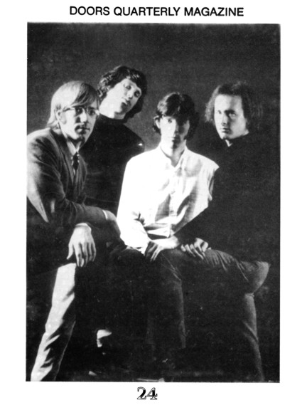

| |

Depending
on your computer's safety settings (antivirus, firewall,
etc.)
the download may generate a standard warning, that is
because the
magazine is a flipbook in the .EXE file format. We
guarantee that
the file is absolutely harmless
and perfectly safe. |
|

A new
window will open with the magazine for you to read online
without the need to download it onto your computer.
Again, we guarantee that it's absolutely
harmless
and perfectly safe. |
|
| |
 |
|
The Doors Quarterly Magazine #24 was
published on August 19, 1991, just a few weeks
after that fatal July 3, 1991. So I was able to write how
I remembered that day – pure mess
and chaos. Screaming drunk people had to be chased away
from the grave by the National
Guards through the garbage, broken bottles and mud they
left behind on July 2. On July 3
it became even worse - after the cemetery officials had
decided to keep the gates closed.
You can’t imagine how weird that scene was like.
Early afternoon about 2000 people (most
of them drunk as hell) were there trying to get in,
knocking at the gates using branches
and bottles, and a huge fire got lit. When they crashed a
wrecked car into the main gate,
it broke and the Parisian riot police tried to chase
everybody off the square - a few "fans"
got busted, a lot got seriously hurt ... Read the report
I wrote when I got back from Paris on
page 5 and 6 of DQ 24; I’ve also tried to analyze
the big question, "Why did this happen?".
I’ve added a few newspaper articles, too.
One of the reasons for the incident was (in my opinion)
the Oliver Stone movie, and
Patricia Kennealy-Morrison sent me an exclusive article
for this DQ setting the record
straight concerning her part in the movie.
A first attempt at a complete Doors LP discography is
followed by reviews of new books
(Densmore, Lisciandro, Seymore and Wincentsen). After
that you should definitely read
Patricia Kennealy’s famous Jazz & Pop article,
'When the Music’s Over – An Audience with
The Doors'. Also, find Part Two of my L.A. Guide for
Doors Fans. This takes you around West
Hollywood and is a follow-up of the guide in DQ 23.
See DQ’s usual Notes from the Underground and a few
reviews of official releases. Doors
fan Ko Lankester continues with a nice article on The
Doors after Morrison, while I myself
wrote a report on how I searched for Pamela’s grave.
Of course I couldn’t review my own book ('Doors'
– Heel Verlag) which had recently come
out in May 1991, so I decided to add just the press
release written by the publisher.
Don’t forget to read the news from 1991 ... what an
exciting and dramatic year it was!
There wasn’t any free poster with it but a fine free
bumper sticker.
Enjoy your digital version and let us know what you think
... we will continue soon by
publishing a digital version of DQ 23.
CU and have fun!
Thanks to Kevin Chiotis for all of his work!
A splendid time is guaranteed for all!
Rainer Moddemann.
And don’t forget:
Please note that your digital copy of The Doors Quarterly
Magazine 24 hasn't been
altered in any way. You get it as it was published on
August 19, 1991 (!). Be aware
that all addresses (private, phone) are no longer valid.
Books, CDs or posters and other
stuff might not be available anymore. Please do not
respond to any of the small ads or
blame anyone for incorrect details - all writers just did
the best they could back in 1991.
And all this happened without any emails and without the
internet.
PS: ... if you would like to obtain an original paper
copy of this Doors Quarterly Magazine
24 please send an email message – there are a couple
of copies still available!
Thank you!
Rainer Moddemann.
|
|